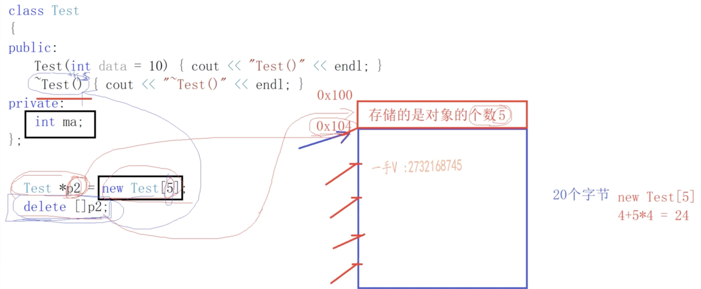

写在前面
本篇blog是学习C++过程中所记录下来的重点，便于后续回顾。笔记来自于施磊老师的C++视频课程；
第一章 前置知识 虚拟地址空间划分 上图是虚拟地址空间的一个划分的图；
1 2 3 4 5 6 7 8 9 10 11 12 13 14 15 16 17 18 int gdata1 = 10; // .data int gdata2 = 0; // .bss 虽然初始化了但是初始化为0 int gdata3; // .bss static int gdata4 = 11; // .data static int gdata5 = 0; // .bss 虽然初始化了但是初始化为0 static int gdata6; // .bss int main() { int a = 12; // mov指令 .data ;存储在文件时是在.data段中，只是在程序运行的时候在栈上分配内存来存储12这个值。 int b = 0; // mvo指令 int c; // mov指令 static int e = 13; // .data static int f = 0; // .bss static int g; // .bss }
有几句经典的话；
1 2 3 4 5 它存在，你能看见：它是物理的 它存在，你看不见；它是透明的 它不存在，你能看见，它是虚拟的（虚拟地址空间） 它不存在，你看不见，它被删除了 注意：内核空间进程是共享的，用户空间是独立的；
函数调用堆栈过程 问题一：main函数调用sum，sum执行完以后，怎么知道回到哪个函数中？
问题二：sum函数执行完以后，回到main之后，如何知道从哪一行重新开始执行？
ffffffv
编译和链接1 编译和链接2 第二章 基础知识精讲 new/delete new和malloc的区别是什么？
malloc和free是C语言的库函数
new不仅仅可以开辟内存，还可以做内存的初始化操作
new有多少种？
1 2 3 4 5 6 int *p = new int(20); int *p = new (nothrow) int; const int *p = new const int(40); int data = 0; // 定位new int *p = new (&data) int (50);
C++的引用和指针 1、左值引用和右值引用
引用是一种更安全的指针
定义指向数组的引用：
1 2 3 4 5 6 7 8 9 10 int arr[5] = {}; int *p = arr; int (&q)[5] = arr; cout << sizeof(arr) << endl; cout << sizeof(p) << endl; cout << sizeof(q) << endl; ============================== 20 8 20
左值 有内存、有名字、值可以修改
右值 没内存、没名字
1 2 3 int && c = 20; const int &d = 20; // 以上两行代码的底层汇编指令是一模一样的；只不过不能通过d来修改变量，而可以通过c来修改；
1、int && c = 20；专门用来引用右值类型，指令上可以自动产生临时量，然后直接引用临时量；
const 指针 引用 const怎么理解？
c和c++中const的区别是什么？
形参带默认值的函数 1 2 3 4 参数总是默认从右向左给 调用效率的问题 定义处可以给默认值，声明处也可以 形参给默认值时，无论是定义还是声明给定，形参默认值只能出现一次；不能重复出现
第三章 C++面向对象 类和对象+this指针 this指针 =》 类 =〉 很多对象 公用一套成员方法
构造函数和析构函数 定义对象时，自动调用构造函数；没有返回值，调用结束之后，对象就产生了；
深浅拷贝 浅拷贝，是做内存地址的拷贝；在类中含有动态内存时会出现错误；因此必须自己实现深拷贝。
代码应用实践 初始化列表 成员变量的初始化方式和他们定义的顺序有关；和构造函数初始化列表中出现的顺序无关；
指向类成员的指针 类的各种成员方法及区别 1 2 3 4 普通的成员函数 =》编译器会添加一个this指针 属于类的作用域 调用该方法时，需要依赖一个对象（常对象无法调用；因为this指针无法指向const对象；常对象只能调用常成员函数） 可以任意访问对象的私有
第四章 C++模板编程 理解函数模板 模板的意义：针对类型进行参数化
1 2 3 4 5 6 7 8 9 10 11 12 13 14 15 16 17 18 19 20 21 22 23 24 25 26 27 28 29 30 31 32 33 34 35 36 37 38 p template<typename T> // 定义模板参数列表 bool compare(T a, T b) // compare是一个函数模板 { cout << "template compare" << endl; return a > b; } /* 在函数调用点，编译器用用户指定的类型，从原模板实例化一份函数代码出来；因此每个类型，都会实例化一份函数代码 */ // 实现const char *类型的特例化，编译器实现的代码不符合逻辑要求 template<> bool compare(const char *a, const char *b) { cout << "compare<const char *>" << endl; return strcmp(a, b) > 0; } // 非模板函数，普通函数 bool compare(const char *a, const char *b) { cout << "not template" << endl; return strcmp(a, b) > 0; } int main() { compare<int> (1, 3); // int 可以省略 compare<int> (1.3, 4); // 可以运行，但是有warning，强制类型转换 // compare(1.3, 4); // 这里是不能运行的，因为无法推演出实参 compare(30, 2); // 对于某些类型来说，依赖编译器默认实现代码逻辑是不符合预期的，比如对于const char *，应该实现为strcmp（a，b） // 需要实现模板的特例化 // 编译器优先把compare 处理成函数名字，没有的话再去找函数模板，如果有类型参数传入的话，那肯定是函数模板； compare("aaa", "bbb"); // 这里实参推演是const char * ，比较的是两个指针的大小；模板特例化之后实现的是strcmp了 compare<const char *> ("aaa", "bbb"); // 这里用特例化版本；上面那个用非模板函数 return 0; }
函数模板 无法编译，因为不知道类型
模板实例化 函数调用点进行实例化
模板函数 才是真正被编译器所编译的
模板类型参数 typename/class
模板非类型参数 必须是常量，只能使用，不能修改；
模板的实参推演 可以根据用户传入的实参的类型，来推导出模板类型参数的具体类型
模板特例化 当编译器实现的默认逻辑代码无法满足特殊类型的要求时，需要自行实现；这就是模板的特例化
模板函数/模板特例化/非模板函数的重载关系 代码中一般comapre和特例化compare构成重载关系；但是跟非模板函数不构成重载关系
分文件 模板代码不能够在一个文件定义，在另一个文件中使用的；
1 2 3 // 告诉编译器，进行指定类型的实例化;见template project template bool compare<int>(int, int); template bool compare<double>(double, double);
理解类模板 + 空间配置器 1 2 3 4 5 6 7 8 9 10 11 12 13 14 15 16 17 18 19 20 21 22 23 24 25 26 27 28 29 30 31 32 33 34 35 36 37 38 39 40 41 42 43 44 45 46 47 48 49 50 51 52 53 54 55 56 57 58 59 60 61 62 63 64 65 66 67 68 69 70 71 72 73 74 75 76 77 78 79 80 81 82 83 84 85 86 87 88 89 90 91 92 93 94 95 96 97 98 99 100 101 102 103 104 105 106 107 108 109 110 111 112 113 114 115 116 117 118 119 120 121 122 123 124 125 126 127 128 129 130 131 132 133 134 135 136 137 138 139 140 141 142 143 144 145 146 147 148 149 150 151 152 153 154 155 156 157 158 159 160 161 162 163 164 165 166 167 168 169 170 171 172 173 174 175 176 177 178 179 180 181 182 183 184 185 186 187 188 189 190 191 192 193 194 195 196 197 198 199 200 201 202 203 204 205 206 207 208 209 210 211 212 213 214 215 216 217 /* * Created 2022-04-24 22:17:16 * Author : fengxuegt * Email : fengxuegt@163.com */ #include<iostream> using namespace std; // 容器，空间配置器allocator // 容器的空间配置器 // 做四件事情： 内存开辟/内存释放 对象构造/对象析构 // 定义容器的空间配置器材，和C++标准库的allocator实现一样 template<typename T> class Allocator { public: T *allocator(size_t size) // 只负责内存开辟 { return (T*) malloc(size * sizeof(T)); } void deallocate(void *ptr) { free(ptr); } void construct(T *ptr, const T &val) // 负责对象的构造 { new (ptr) T(val); // 定位new } void destroy(T *ptr) // 负责对象的析构 { ptr->~T(); // ～T() 调用T类型的析构函数 } }; /* 容器底层内存开辟，内存释放，对象构造，对象释放都通过空间配置器来实现 */ template<typename T = int, typename Alloc = Allocator<T> > class MyVector { public: MyVector(int size = 10) { // 需要将内存分配和对象构造分开 // m_first = new T[size]; m_first = m_alloc.allocator(size); m_last = m_first; m_end = m_first + size; } ~MyVector() { // 析构容器有效的元素，然后释放m_first指向的内存空间 // delete []m_first; int size = m_last - m_first; for (int i = 0; i < size; i++) { m_alloc.destroy(&m_first[i]); // 将vector中的有效元素析构掉 } m_alloc.deallocate(m_first); // 释放堆上的内存 m_first = nullptr; m_last = nullptr; m_end = nullptr; } MyVector(const MyVector<T> &vec) { // m_first = new T[vec.m_end - vec.m_first]; m_first = m_alloc.allocator(vec.m_end - vec.m_first); T *cur = m_first; int len = m_last - m_first; for (int i = 0; i < len; i++) { // m_first[i] = vec.m_first[i]; m_alloc.construct(m_first + i, vec.m_first[i]); } m_last = vec.m_last; m_end = vec.m_end; } MyVector<T> & operator= (const MyVector<T> &vec) { if (this == &vec) return *this; // delete []m_first; int size = m_last - m_first; for (int i = 0; i < size; i++) { m_alloc.destroy(&m_first[i]); // 将vector中的有效元素析构掉 } m_alloc.deallocate(m_first); // 释放堆上的内存 m_first = m_alloc.allocator(vec.m_end - vec.m_first); T *cur = m_first; int len = m_last - m_first; for (int i = 0; i < len; i++) { // m_first[i] = vec.m_first[i]; m_alloc.construct(m_first + i, vec.m_first[i]); } m_last = vec.m_last; m_end = vec.m_end; return *this; } void push_back(const T &val) { if (full()) expand(); // *m_last = val; m_alloc.construct(m_last, val); m_last++; } void pop_back() { if (empty()) { throw "vector is empty"; } m_last--; m_alloc.destroy(m_last); } bool empty() const { return m_first == m_last; } bool full() const { return m_last == m_end; } T& operator[](const int index) const { return m_first[index]; } int size() const {return (m_last - m_first);} T back() const {return *(m_last-1);} private: T *m_first; // 指向数组起始位置 T *m_last; // 指向数组有效元素的后继位置 T *m_end; // 指向数组空间的后继位置 Alloc m_alloc; // 定义容器的空间配置器对象 void expand() // 容器的二倍扩容 { int size = m_end - m_first; // T *tmp = new T[size * 2]; T *tmp = m_alloc.allocator(size * 2); for (int i = 0; i < size; i++) { m_alloc.construct(tmp + i, m_first[i]); } // delete []m_first; for (int i = 0; i < size; i++) { m_alloc.destroy(m_first + i); } m_alloc.deallocate(m_first); m_first = tmp; m_end = m_first + size * 2; m_last = m_first + size; } }; class Test { public: Test(){cout << "Test()" << endl;} ~Test(){cout << "~Test()" << endl;} }; // 需要将内存分配和对象构造分开，不然定义一个容器，就会构造很多对象 int main() { #if 1 MyVector<Test> my; // 定义的时候直接构造对象，如果使用new的话 Test t1, t2, t3; cout << "------------" << endl; my.push_back(t1); my.push_back(t2); my.push_back(t3); cout << "-----------" << endl; my.pop_back(); // 这个地方应该要析构对象，而不是只移动指针，因为对象有可能存有指向其他地方的内存指针； // 如果不析构，可能造成内存泄漏，但是不能使用delete析构，因为delte会在析构对象的同时把内存释放掉； // 将对象的析构和内存释放也分离； cout << "------------" << endl; #endif #if 0 MyVector<int> vec; vec.push_back(1); vec.push_back(2); vec.push_back(3); vec.push_back(4); vec.push_back(5); vec.pop_back(); vec[0] = 9; for (int i = 0; i < 3; i++) { cout << vec[i] << endl; } cout << "---------------" << endl; cout << vec.size() << endl; cout << vec.back(); #endif return 0; } /* 为什么要使用空间配置器？ 因为使用new或者delete的话无法将内存分配和释放以及对象的构造和析构分开； */
第五章 C++运算符重载 复数类的实现 1 2 3 4 5 6 7 8 9 10 11 12 13 14 15 16 17 18 19 20 21 22 23 24 25 26 27 28 29 30 31 32 33 34 35 36 37 38 39 40 41 42 43 44 45 46 47 48 49 50 51 52 53 54 55 56 57 58 59 60 61 62 63 64 65 66 67 68 69 70 71 72 73 74 75 76 77 78 79 80 81 82 83 84 85 86 87 88 89 90 91 92 93 94 95 96 97 98 99 100 101 102 /* C++ 的运算符重载：使得对象表现的像内置类型一样 template<typename T> T sum(T &a, T &b) { return a + b; } */ #include<iostream> using namespace std; class CComplex {s friend CComplex operator+(const CComplex &lhs, const CComplex &rhs); friend ostream& operator<<(ostream &out, const CComplex &rhs); friend istream& operator>>(istream &in, CComplex &rhs); private: int m_real; int m_image; public: CComplex(int real = 0, int image = 0):m_real(real), m_image(image) { } ~CComplex(){} // CComplex operator+(const CComplex &rhs) { // CComplex res; // res.m_image = this->m_image + rhs.m_image; // res.m_real = this->m_real + rhs.m_real; // return res; // } void show() { cout << "real: " << m_real << " "; cout << "image: " << m_image << endl; } CComplex& operator++() { // 前置++ this->m_image++; this->m_real++; return *this; } CComplex operator++(int) { // 后置++ // CComplex tmp = *this; // this->m_image++; // this->m_real++; // return tmp; return CComplex(m_real++, m_image++); } void operator+=(const CComplex &rhs) { this->m_real += rhs.m_real; this->m_image += rhs.m_image; } }; ostream& operator<<(ostream &out, const CComplex &rhs) { // 重载对象输出 out << "real: " << rhs.m_real << " "; out << "image: " << rhs.m_image << endl; return out; } CComplex operator+(const CComplex &lhs, const CComplex &rhs) { CComplex res; res.m_real = lhs.m_real + rhs.m_real; res.m_image = lhs.m_image + rhs.m_image; return res; } istream& operator>>(istream &in, CComplex &rhs) { in >> rhs.m_real >> rhs.m_image; return in; } int main() { CComplex com1(10, 10); CComplex com2(20, 10); CComplex com3 = com1 + com2; CComplex com4 = com1 + 44; // 等价于 com1.operator+(44); // 44 会自动转化成ccomplex类型 com4.show(); // 编译器在做对象运算的时候，会调用对象的运算符重载函数（优先调用成员方法）；如果没有成员方法，就在全局作用域中寻找合适的运算符重载函数； // 如果有全局方法，则成员方法可以省略 CComplex com5 = 22 + com1; com5.show(); com5 = com1++; com1.show(); com5.show(); com5 = ++com1; com1.show(); com5.show(); cout << "-----" << endl; com1 += com2; com1.show(); cout << "======" << endl; cout << com1; cout << "########" << endl; cin >> com1 >> com2; cout << com1 << com2; return 0; }
string类型的实现 1 2 3 4 5 6 7 8 9 10 11 12 13 14 15 16 17 18 19 20 21 22 23 24 25 26 27 28 29 30 31 32 33 34 35 36 37 38 39 40 41 42 43 44 45 46 47 48 49 50 51 52 53 54 55 56 57 58 59 60 61 62 63 64 65 66 67 68 69 70 71 72 73 74 75 76 77 78 79 80 81 82 83 84 85 86 87 88 89 90 91 92 93 94 95 96 97 98 99 100 101 102 103 104 105 106 107 108 109 110 111 112 113 114 115 116 117 118 119 120 121 122 123 124 125 126 127 128 129 130 131 132 133 134 135 136 137 138 139 140 141 142 143 144 145 146 147 148 149 150 151 152 153 154 155 156 157 158 159 160 161 162 163 164 165 166 167 168 169 170 171 172 173 174 175 176 177 178 179 180 181 182 183 184 185 186 187 188 #include<iostream> #include<string> #include<cstring> using namespace std; // 实现自定义string对象 class LWString { friend ostream& operator<<(ostream &out, const LWString &rhs); friend LWString operator+(const LWString &lhs, const LWString &rhs); private: char *m_str; public: LWString(const char * str= nullptr); ~LWString(); // LWString operator+(const LWString &rhs) { // this->m_str = new char[strlen(m_str) + strlen(rhs.m_str) + 1]; // } int length() const { // const之后是否是const的对象都能够调用 return strlen(m_str); } LWString(const LWString &rhs) { m_str = new char[rhs.length() + 1]; strcmp(m_str, rhs.m_str); } LWString& operator=(const LWString &rhs) { if (this == &rhs) { return *this; } delete[]m_str; m_str = new char[strlen(rhs.m_str) + 1]; strcmp(m_str, rhs.m_str); return *this; } bool operator>(const LWString &rhs) { if (strcmp(this->m_str, rhs.m_str) > 0) { return true; } return false; } char& operator[](int index) { // 非const return m_str[index]; } const char& operator[](int index) const{ // const return m_str[index]; } const char* c_str() const { // 最后要写const return m_str; } // string类的自定义迭代器 class Iterator { public: Iterator(char *p = nullptr) : m_ptr(p) {} bool operator!=(const Iterator &rhs) { return rhs.m_ptr != m_ptr; } Iterator& operator++() { ++m_ptr; return *this; } char& operator*() { return *m_ptr; } private: char *m_ptr; }; // begin方法是容器类的成员方法；返回的是迭代器对象而已； // begin返回的是首个元素的指针 Iterator begin() { return Iterator(m_str); } // end返回的是最后一个元素的下一个位置 Iterator end() { return Iterator(m_str + strlen(m_str)); } }; LWString operator+(const LWString &lhs, const LWString &rhs) { LWString tmp; tmp.m_str = new char[lhs.length() + rhs.length() + 1]; strcpy(tmp.m_str, lhs.m_str); char *cur = tmp.m_str + lhs.length(); strcpy(cur, rhs.m_str); return tmp; // 这里不定义tmp的话有内存泄漏，定义tmp的话效率就特别低； #if 0 char *buf = new char[lhs.length() + rhs.length() + 1]; strcpy(buf, lhs.m_str); char *cur = buf + lhs.length(); strcpy(cur, rhs.m_str); LWString tmp(buf); delete []buf; #endif } ostream& operator<<(ostream &out, const LWString &rhs) { out << rhs.m_str; return out; } LWString::LWString(const char *str) { if (str == nullptr) { m_str = new char[1]; m_str[0] = '\0'; } else { m_str = new char[strlen(str) + 1]; strcpy(m_str, str); } } LWString::~LWString() { delete[]m_str; m_str = nullptr; } int main() { LWString str = "hello world"; // str是一种容器，底层放了一组char // 容器的迭代器类型 // 迭代器的作用就是提供一种统一的方式遍历所有的容器 auto it = str.begin(); for (; it != str.end(); ++it) { cout << *it; } cout << endl; // C++11 foreach 的方式访问容器内部的元素 // foreach方式遍历的底层还是使用的迭代器进行遍历的 for (char ch : str) { cout << ch; } #if 0 LWString str1; LWString str2 = "aaa"; LWString str3 = "bbb"; LWString str4 = str2 + str3; LWString str5 = str2 + "ccc"; LWString str6 = "ddd" + str2; cout << "str6 " << str6 << endl; if (str5 > str6) { cout << str5 << " > " << str6 << endl; } else { cout << str5 << " < " << str6 << endl; } int len = str6.length(); for (int i = 0; i < len; i++) { cout << str6[i] << " "; } cout << endl; char buf[1024] = {0}; strcpy(buf, str6.c_str()); cout << "buf: " << buf << endl; #endif #if 0 string str1; string str2 = "aaa"; string str3 = "bbb"; string str4 = str2 + str3; string str5 = str2 + "ccc"; string str6 = "ddd" + str2; cout << "str6 " << str6 << endl; if (str5 > str6) { cout << str5 << " > " << str6 << endl; } else { cout << str5 << " < " << str6 << endl; } int len = str6.length(); for (int i = 0; i < len; i++) { cout << str6[i] << " "; } cout << endl; char buf[1024] = {0}; strcpy(buf, str6.c_str()); cout << "buf: " << buf << endl; #endif return 0; }
Vector类型的迭代器实现 1 2 3 4 5 6 7 8 9 10 11 12 13 14 15 16 17 18 19 20 21 22 struct Iterator { Iterator(T *ptr = nullptr):m_ptr(ptr) {} bool operator!=(const Iterator &it) const { return m_ptr != it.m_ptr; } T& operator*() { return *m_ptr; } void operator++() { ++m_ptr; } public: T *m_ptr; }; Iterator begin() { return Iterator(m_first); } Iterator end() { return Iterator(m_last); } // 基本上跟string类型是相同的，因为底层数据结构都是数组
迭代器的失效问题？ 要后面再看看1 2 3 4 5 6 7 8 9 10 11 12 13 14 15 16 17 18 19 20 21 22 23 24 25 26 27 28 29 30 31 32 33 /* 1、迭代器为什么会失效？ a、当容器调用erase之后，当前位置到容器末尾元素的迭代器全部失效 b、当容器调用insert之后，当前位置到容器末尾元素的迭代器全部失效 首元素 插入点/删除点 末尾元素 有效 ｜｜ 无效 c、insert来说，如果引起容器扩容 原来容器的所有迭代器就全部失效了 删除或者增加之后，迭代器就失效了；增加也包含扩容的情况； d、不同容器的迭代器是不能进行比较运算的 2、迭代器失效之后，问题怎么解决？ 对插入点/删除点的迭代器进行更新操作 */ // 删除操作 while (it != vec.end()) { if (*it % 2 == 0) { it = vec.erase(it); } else { ++it; } } // 插入操作 auto it = vec.begin(); for (; it != vec.end(); ++it) { if (*it % 2 == 0) { it = vec.insert(it, *it -1); ++it; } } // 容器底层迭代器失效的实现方式 // 多看看代码
new和delete 
1 2 3 4 5 6 7 8 9 10 11 12 13 14 15 16 17 18 19 20 21 22 23 24 25 26 27 /* 1、malloc和new的区别？ malloc是按照字节分配内存的；new开辟内存时需要指定类型 new int[10]， 所以malloc开辟内存返回的是void*，operator new 返回的是特定类型 malloc只负责开辟空间，new不仅仅是开辟空间，还可以进行数据的初始化，调用构造函数；new int（20） new int【20】（）； malloc开辟内存失败时返回nullptr，new开辟失败时抛出bad_alloc异常 2、free和delete的区别？ delete （int*）p；调用析构函数之后free（p） new -》 operator new delete -》 operator delete 3、new和delete单个和数组形式能够混用吗？C++为什么要区分单个和数组的形式？ 对于普通的内置类型，混用是没有问题的； 对于自定义的类型，因为有析构函数，因此为了正确的调用析构函数，在开辟对象数组的时候，会多开辟4个字节，记录对象的个数 如上图所示，operator分配内存时分配的是0x100，但是返回的地址是0x104；如果不匹配的话就会出错； */ // 先调用operator new开辟内存空间，然后调用对象的构造函数（初始化） void* operator new(size_t size) { void *p = malloc(size); if (p == nullptr) { throw bad_alloc(); } return p; } // delete p; 调用p指向对象的析构函数，再调用operator delete释放空间 void operator delete(void *ptr) { free(ptr); }
new和delete实现的对象池应用 第六章 OOP 继承的本质和原理 1 2 3 4 5 1、继承的本质和原理 a、代码的复用 2、类和类之间的关系 组合：a part of 一部分的关系 继承：a kind of 一种的关系
继承方式
基类的访问限定符
派生类的访问限定符
外部的访问限定符
public
public
public
Y
protected
protected
N
private
不可见
N
protected
public
protected
N
protected
protected
N
private
不可见
N
private
public
private
N
protected
private
N
private
不可见
N
1 2 3 4 5 6 7 总结： 外部对象只能够访问public的成员，protected和private的成员无法直接访问； 在继承结构中，派生类可以从基类中继承private的成员，但是无法直接访问，因此应该认为是不可见的 protected和private的区别？ 在基类中定义的成员，想要被派生类访问，但是不想被外部访问，就可以定义为protected；如果都不想被访问，就定义在private 默认的继承方式是什么？ 要看派生类是class定义的还是struct定义的，class默认为private继承；struct默认为public继承
派生类的构造过程 1 2 3 4 5 6 7 8 1、派生类从继承可以继承基类的所有成员和函数 派生类如何初始化从基类继承过来的成员呢？ 通过调用基类的构造方法来进行初始化 派生类的构造函数和析构函数，用来构造和析构派生类部分； 基类的构造函数和析构函数，用来构造和析构基类部分； 派生类构造和析构的过程是： 派生类调用基类的构造函数，初始化从基类继承的成员；之后调用派生类的构造函数，初始化派生类的成员 调用派生类的析构函数，释放派生类的资源；之后调用基类的析构函数，释放基类的资源
重载、覆盖、隐藏 1 2 3 4 5 6 7 8 9 10 11 12 1、重载关系 一组函数，函数名相同，参数列表不同；最重要的是必须处于同一作用域内 2、隐藏关系 在继承结构中，派生类的同名成员，将基类的同名成员给隐藏掉了 想要调用的话必须显示的调用； ============================================================= 1、把继承结构，也说成从上到下的结构 2、基类对象 和 派生类对象的相互转化？ 3、基类指针和派生类指针的相互指向？ 总结：在继承结构中，只支持从下到上的类型转换； 派生类对象赋值给基类对象，会做对象的切割； 基类指针指向派生类，指针不会越界，反之，派生类指针会指向未定义区域
虚函数、静态绑定、动态绑定 1 2 3 4 5 6 7 8 9 10 静态绑定：编译时期的绑定； 覆盖： 基类和派生类的方法、返回值、函数名和形参列表都相同，而且基类的方法是虚函数，那么派生类的方法就自动处理成虚函数，它们之间为覆盖关系。 一个类添加了虚函数，对这个类有什么影响？ 总结： 如果类中定义了虚函数，那么编译阶段，编译器会给这个类产生一个唯一的vftable虚函数表，虚函数表中记录了RTTI指针和虚函数的地址。当程序运行时，虚函数表会被加载到.rodata区域； 一个类里面定义了函数，那么这个类定义的对象，其运行时，内存中开始部分，多存储一个vfptr的虚函数指针，指向相应类型的虚函数表vftable。一个类型定义的n个对象，他们的vfptr指向的都是同一张虚函数表 一个类里面虚函数的个数，不影响对象内存大小（vfptr），影响的是虚函数表的大小 编译器进行编译的过程中，如果发现函数是普通函数，那么直接按照静态绑定的方式执行； 如果发现函数是虚函数，那么就需要按照动态绑定来处理了。动态绑定时需要将函数中的前四个字节存储的vfptr取出来，去寻找给定的函数。
虚函数和动态绑定问题 1 2 3 4 5 6 7 8 9 10 11 12 13 14 15 16 17 18 19 20 21 22 23 24 25 26 27 28 29 30 31 32 33 34 35 36 37 38 39 40 41 42 43 44 45 46 47 48 49 50 51 52 53 54 55 56 是不是虚函数的调用就一定是动态绑定？ 不是的，在构造函数中的函数调用一定是静态绑定；因为这个时候还没有派生类，无法进行动态绑定； 另外，如果不是通过指针或者引用来调用函数，那么就执行静态绑定； // 虚函数与静态绑定 #include<iostream> using namespace std; class Base { public: Base(int data = 10) : m_data(data) {} virtual void show() {cout << "Base::show()" << endl;} private: int m_data; }; class Derive : public Base { public: Derive(int data = 22) : Base(data), m_b(data) {} void show() {cout << "Derive::show()" << endl;} private: int m_b; }; int main() { Base b; Derive d; // 静态绑定 用对象本身调用函数 b.show(); d.show(); // 动态绑定 必须由指针调用函数 Base *pb1 = &b; pb1->show(); Base *pb2 = &d; pb2->show(); // 动态绑定 必须由引用调用函数 Base &rb1 = b; rb1.show(); Base &rb2 = d; rb2.show(); // 动态绑定 Derive *pd1 = &d; pd1->show(); Derive &rd1 = d; rd1.show(); // 动态绑定 是不安全的 Derive *pd2 = (Derive *) &b; pd2->show(); return 0; }
虚析构函数 1 2 3 4 5 6 7 8 9 10 11 12 13 14 哪些函数不能实现成虚函数？ 虚函数依赖： 虚函数能产生地址，储存在vftable中 因此对象必须存在 构造函数： 这时候还没有对象，因此不能是虚函数； 并且构造函数中即使调用虚函数，也是执行的静态绑定，因为这时候还没有派生类呢 static 成员方法： 不依赖于对象，因此不能是虚函数； 析构函数： 这时候是有对象存在的，因此可以是虚函数 什么时候析构函数必须实现成虚函数？ 基类的指针指向堆上new出来的子类的时候。这个时候如果基类析构函数不是虚函数的话，那么在delete p的时候只会执行基类的析构函数；派生类的析构函数不会执行，导致派生类申请的资源无法释放；基类的析构函数为虚函数的话，派生类的析构函数也为虚函数；（理论上可以将基类和派生类的析构函数看成是覆盖的关系）
如何理解多态 1 2 3 4 5 6 7 8 9 如何理解多态？ 静态（编译时期）多态： 函数重载、模板 动态多态： 在继承结构中，基类指针指向派生类对象，通过该指针调用同名覆盖方法（虚函数） 多态底层是通过动态绑定实现的；pbase指向哪个派生类对象，就会访问哪个派生类的vfptr，就会访问vftable，找到对应的函数 继承的好处？ 代码复用 在基类中，提供统一的虚函数接口，让派生类进行重写；
抽象类 1 2 3 4 抽象类和普通类有什么区别？ 一般把什么类定义为抽象类？ 拥有纯虚函数的类叫做抽象类；抽象类是不能实例化对象的；但是可以定义指针和变量； 一般将提供统一API接口的类定义为抽象类；
面试题分析 1 2 3 4 5 6 7 8 9 10 11 12 13 14 15 16 17 18 19 20 21 22 23 24 25 26 27 28 29 30 31 32 33 34 35 36 37 38 39 40 41 42 43 44 45 46 47 48 49 50 51 52 53 54 55 56 57 58 59 60 61 62 63 64 65 66 67 68 69 70 71 72 73 74 75 76 77 78 79 80 81 82 83 84 85 86 87 88 89 90 91 92 93 94 95 96 97 98 99 100 101 102 103 104 105 106 107 108 问题1 下列代码的输出是？ class Animal{ public: Animal(string name) : m_name(name) {} virtual void bark() = 0; private: string m_name; }; class Dog : public Animal{ public: Dog(string name) : Animal(name) {} void bark() {cout << "wangwangwang" << endl;} private: }; class Cat : public Animal{ public: Cat(string name) : Animal(name) {} void bark() {cout << "miaomiaomiao" << endl;} private: }; int main() { Animal *md = new Dog("dog"); Animal *mc = new Cat("cat"); int *p1 = (int*)md; int *p2 = (int*)mc; int tmp = p1[0]; p1[0] = p2[0]; p2[0] = tmp; cout << "dog: "; md->bark(); cout << "cat: "; mc->bark(); return 0; } /* dog: miaomiaomiao cat: wangwangwang 比较简单，相当于就是把两个派生类的vfptr交换了，因此调用的虚函数也就换了 */ 问题2:函数的默认参数问题？ class Base { public: virtual void show(int data = 10) { cout << "Base::show(): " << data << endl; } }; class Derive : public Base { public: void show(int data = 20) { cout << "Derive::show(): " << data << endl; } }; int main() { Base *b = new Derive; /* push 0AH => 函数调用，参数压栈实在编译时期就确定好的 mov eax, dword ptr[b] mov ecx, dword ptr[eax] call ecx */ b->show(); // 动态绑定，但是参数在编译时期就确定了；因此打印为10 return 0; } // Derive::show(): 10 问题3:权限限定符的作用？ #include<iostream> using namespace std; class Base { public: virtual void show() { cout << "Base::show()" << endl; } }; class Derive : public Base { private: void show() { cout << "Derive::show()" << endl; } }; int main() { Base *p = new Derive(); /* 成员方法能不能调用，就是说方法的访问权限是不是public的，是在编译阶段就需要确定的 编译阶段是base调用show，是没问题的； 但是在运行阶段，调用的就不是基类的show方法了； 将基类和派生类的访问权限对换，就会出错了； */ p->show(); return 0; } // 如上述代码，虽然derive类的show方法是private的
虚基类和虚继承 1 2 抽象类：有virtual函数的类叫做抽象类 vfptr vftable 虚基类：被虚继承的类叫做虚基类 vbptr vbtable （vbtable中存储的是成员变量内存的offset）
image](memory_layout.png)
1 派生类的内存布局就是将原有基类的成员移动到派生类成员的下方，然后在原有位置添加vbptr指针，指向vbtable表
第七章 C++ STL vector 1 2 3 4 5 6 7 8 9 10 11 12 13 14 15 16 17 18 19 20 21 22 23 24 25 26 27 28 29 30 31 32 33 34 35 36 37 38 39 40 41 42 43 44 45 46 47 48 49 50 51 52 53 54 55 56 57 58 59 60 61 62 63 64 65 66 67 68 69 70 71 /* vector: 向量容器 底层数据结构：动态开辟的数组，每次以原来空间大小的2倍进行扩容 vector<int> vec; 增加： vec.push_back(20); // 末尾增加元素O（1）， 最后添加时会导致容器扩容 vec.insert(it, 20); // 使用迭代器，插入it指向的位置O（n） 删除： vec.pop_back(); // 删除末尾元素O（1） vec.erase(it); // 删除迭代器指向it指向的元素O（n） 查询： operator[] 下标的随机访问vec[5] O(1) iterator 迭代器遍历 find for_each foreach本质上还是通过迭代器来实现的 注意：对容器进行连续插入或者删除操作（insert/earse），一定要更新迭代器，否则，当第一次insert或者erase完成，迭代器就已经失效了 常用方法介绍： size() empty() reserve(20); // vector预留空间。只给容器底层开辟指定大小的内存空间，并不会添加新的元素 resize()； // vector扩容用的，不仅给容器底层开辟指定大小的内存空间，还会添加新的元素 swap()；// 两个容器进行元素交换 */ int main() { vector<int> vec; vec.reserve(20); // 只开辟空间，并不添加元素 // vec.resize(20); // 开辟空间，并添加元素用的时new int() cout << vec.empty() << endl; cout << vec.size() << endl; for (int i = 0; i < 20; ++i) { vec.push_back(rand() % 100 + 1); } cout << vec.empty() << endl; cout << vec.size() << endl; int size = vec.size(); for (int i = 0; i < size; i++) { cout << vec[i] << " "; } cout << endl; auto it2 = vec.begin(); while (it2 != vec.end()) { if (*it2 % 2 == 0) { it2 = vec.erase(it2); } else { ++it2; } } auto it1 = vec.begin(); for (; it1 != vec.end(); ++it1) { cout << *it1 << " "; } cout << endl; for (it1 = vec.begin(); it1 != vec.end(); ++it1) { if (*it1 % 2 != 0) { it1 = vec.insert(it1, *it1 - 1); it1++; } } for (auto i : vec) { cout << i << " "; } cout << endl;
dequeue和list 1 2 3 4 5 6 7 8 9 10 11 12 13 14 15 16 17 18 19 20 21 22 23 24 25 26 27 28 29 30 31 32 33 34 35 36 37 /* dequeue：双端队列 底层数据结构：动态开辟的二维数组，一维数组从2开始，以两倍的方式进行扩容，每次扩容之后，原来第二维的数组，从新的第一维数组的下标old_size/2开始存放，上下都预留相同的空行，方便支持dequeue的首尾元素添加 deque<int> deq; 增加： deq.push_back(20); 从末尾添加元素 O(1) deq.push_front(20); 从首部添加元素 O(1) // vec.insert(vec.begin(), 20) O(n) deq.insert(it, 20); it指向的位置添加元素 O(n) 删除： deq.pop_back(); 从末尾删除元素 O(1) deq.pop_front(); 从首部删除元素 O(1) deq.erase(it); 从it指向的位置删除元素 O(n) 查询搜索： iterator(连续的insert和erase一定要考虑迭代器失效的问题) list：链表容器 底层数据结构：双向的循环链表 pre data next list<int> mylist; 增加： mylist.push_back(20); 从末尾添加元素 O(1) mylist.push_front(20); 从首部添加元素 O(1) // vec.insert(vec.begin(), 20) O(n) mylist.insert(it, 20); it指向的位置添加元素 O(1) // 链表中进行insert的时候，先要进行一个query查询操作 对于链表来说，查询操作效率就比较慢了 删除： mylist.pop_back(); 从末尾删除元素 O(1) mylist.pop_front(); 从首部删除元素 O(1) mylist.erase(it); 从it指向的位置删除元素 O(1) 查询搜索： iterator(连续的insert和erase一定要考虑迭代器失效的问题) deque和list，比vector容器多出来的增加删除函数接口： push_front和pop_front */
vector和dequeue对比 1 2 3 4 5 6 7 8 9 10 11 12 13 14 15 16 17 18 19 20 21 22 /* vector特点：动态数组，内存是连续的，2倍的方式进行扩容， vector<int> vec; 0-1-2-4-8... reserve(20)/resize deque特点：动态开辟的二维数组空间，第二维是固定长度的数组空间，扩容的时候（第一维的数组进行2倍扩容） 面经问题：deque底层内存是否是连续的？ 并不是 每一个第二维是连续的， 容器的纵向考察：容器掌握的深度 容器的横向考察：各个相似容器之间的对比 vector和deque之间的区别？ 1.底层数据结构： 2.前中后插入删除元素的时间复杂度： 中间和末尾 O(1) 前 deque O(1) vector O(n) 3.对于内存的使用效率： vector 需要的内存空间必须是连续的 deque 可以分块进行数据存储，不需要内存空间必须是一片连续的 4.在中间进行insert或者erase，vector和deque它们的效率谁能好一点(vector)？谁能差一点(deque)？ O(n) for(int i=0; i<10000; ++i) { cout << arr[i] << endl; } vector和list之间的区别？ 数组:增加删除O(n) 查询O(n) 随机访问O(1) 链表:(考虑搜索的时间)增加删除O(1) 查询O(n) 1.底层数据结构：数组 双向循环链表 */
容器适配器 1 2 3 4 5 6 7 8 9 10 11 12 13 14 15 16 17 18 19 20 21 22 23 24 25 26 27 28 29 30 /* 标准容器 - 容器适配器 => 设计模式，就叫做适配器模式 怎么理解这个适配器？ 1.适配器底层没有自己的数据结构，它是另外一个容器的封装，它的方法全部由底层依赖的容器进行实现的 2.没有实现自己的迭代器 template<typename T, typename Container=deque<T>> class Stack { public: void push(const T &val) { con.push_back(val); } void pop() { con.pop_back(); } T top()const { return con.back(); } private: Container con; }; stack: push入栈 pop出栈 top查看栈顶元素 empty判断栈空 size返回元素个数 queue: push入队 pop出队 front查看队头元素 back查看队尾元素 empty判断队空 size返回元素个数 queue => deque 为什么不依赖vector呢？？？ stack => deque 为什么不依赖vector呢？？？ 1.vector的初始内存使用效率太低了！没有deque好 queue<int> stack<int> vector 0-1-2-4-8 deque 4096/sizeof(int) = 1024 2.对于queue来说，需要支持尾部插入，头部删除，O(1) 如果queue依赖vector，其出队效率很低 3.vector需要大片的连续内存，而deque只需要分段的内存，当存储大量数据时，显然deque对于内存的利用率更好一些 priority_queue: push入队 pop出队 top查看队顶元素 empty判断队空 size返回元素个数 默认：大根堆 priority_queue => vector 为什么依赖vector？？？ 底层默认把数据组成一个大根堆结构 在一个内存连续的数组上构建一个大根堆或者小根堆的 */
容器迭代器 1 2 3 4 5 6 7 8 9 10 11 12 13 14 15 16 17 18 19 20 21 22 23 24 25 26 27 28 29 30 31 32 33 34 35 36 37 38 39 40 41 42 43 44 45 46 47 48 49 50 51 52 53 54 /* 容器的迭代器 const_iterator:常量的正向迭代器 只能读，而不能写了 iterator:普通的正向迭代器 reverse_iterator:普通的反向迭代器 const_reverse_iterator:常量的反向迭代器 */ int main() { vector<int> vec; for (int i = 0; i < 20; ++i) { vec.push_back(rand() % 100); } // vector<int>::iterator // auto it1 = vec.begin(); // const_iterator <= iterator /* class const_iterator { public: const T& operator*(){return *_ptr;} } class iterator : public const_iterator { T& operator*(){return *_ptr;} } */ vector<int>::const_iterator it1 = vec.begin(); for (; it1 != vec.end(); ++it1) { cout << *it1 << " "; } cout << endl; // rbegin()：返回的是最后一个元素的反向迭代器表示 // rend：返回的是首元素前驱位置的迭代器的表示 // vector<int>::reverse_iterator vector<int>::const_reverse_iterator rit = vec.rbegin(); for (; rit != vec.rend(); ++rit) { cout << *rit << " "; } cout << endl; /*for (int v : vec) { cout << v << " "; } */ cout << endl; return 0; }
函数对象 1 2 3 4 5 6 7 8 9 10 11 12 13 14 15 16 17 18 19 20 21 22 23 24 25 26 27 28 29 30 31 32 33 34 35 36 37 38 39 40 41 42 43 44 45 46 47 48 49 50 51 52 53 54 55 56 57 58 59 60 /* 函数对象 => C语言里面的函数指针 */ // 使用C的函数指针解决方案 /* template<typename T> inline bool mygreater(T a, T b) { return a > b; } template<typename T> inline bool myless(T a, T b) { return a < b; } */ /* 1.通过函数对象调用operator()，可以省略函数的调用开销，比通过函数指针 调用函数（不能够inline内联调用）效率高 2.因为函数对象是用类生成的，所以可以添加相关的成员变量，用来记录函数对象使用 时更多的信息 */ // C++函数对象的版本实现 template<typename T> class mygreater { public: bool operator()(T a, T b) // 二元函数对象 { return a > b; } }; template<typename T> class myless { public: bool operator()(T a, T b) // 二元函数对象 { return a < b; } }; // compare是C++的库函数模板 template<typename T, typename Compare> bool compare(T a, T b, Compare comp) { // 通过函数指针调用函数，是没有办法内联的，效率很低，因为有函数调用开销 return comp(a, b); // operator()(a, b); } int main() { cout << compare(10, 20, mygreater<int>()) << endl; cout << compare(10, 20, myless<int>()) << endl; //cout << compare('b', 'y') << endl; return 0; }
泛型算法和绑定器 1 2 3 4 5 6 7 8 9 10 /* 五、泛型算法 = templte + 迭代器 + 函数对象 特点一：泛型算法的参数接收的都是迭代器 特点二：泛型算法的参数还可以接收函数对象（C函数指针） sort,find,find_if,binary_search,for_each 绑定器 + 二元函数对象 =》 一元函数对象 bind1st：把二元函数对象的operator()(a, b)的第一个形参绑定起来 bind2nd：把二元函数对象的operator()(a, b)的第二个形参绑定起来 */
第8章 面试问题 1 2 3 4 5 6 .rodata是内存页面的属性；.text段是.rodata段的一部分；两者不是一个层级的东西，划分的标准都不一样； 因为c和C++要支持可变参数，所以参数压栈顺序是从右向左压栈； 从右向左压的话，最后可以通过ebp+4来取得第一个参数；否则不知道要压多少个参数； 函数参数传递是调用的拷贝构造函数 如果用临时对象拷贝构造新对象，那么临时对象就不会再产生了； 返回对象时，直接返回，不要先定义临时变量再返回；